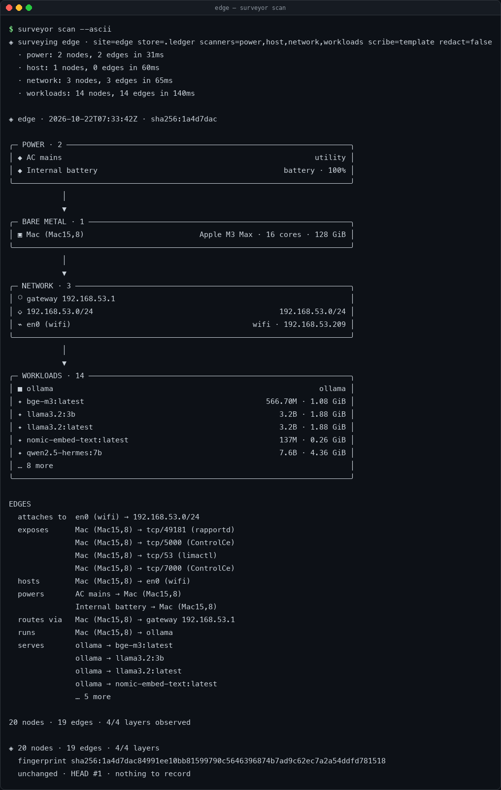

It never changes the box.
Power, thermals, CPU, interfaces, subnets, containers, model servers and listening sockets — observed, never touched.
Empirical infrastructure cartography for the edge
The Surveyor is a read-only systems analyst. It looks at the box it is running on, compiles what it finds into an Open Edge Topology plat, diffs that plat against the last one, and writes down what actually changed.

surveyor invocation.01 / Quick start
Zero runtime dependencies. macOS and Linux, Python 3.11+.
# clone and run without installing git clone https://github.com/hamanakam1/the-surveyor cd the-surveyor PYTHONPATH=src python3 -m surveyor scan --ascii # or install the entry point python3 -m pip install -e . surveyor scan --ascii
02 / What it does
Power, thermals, CPU, interfaces, subnets, containers, model servers and listening sockets — observed, never touched.
Every survey is an object in a parent-linked chain. Recompute it and you know nothing was edited.
The diff classifies what actually changed, and ranks it by how much it matters. Telemetry noise never becomes a finding.
No cloud account, no dashboard to feed, no agent fleet. One Python tree and a ledger you can check.